Tosh qahvaxona
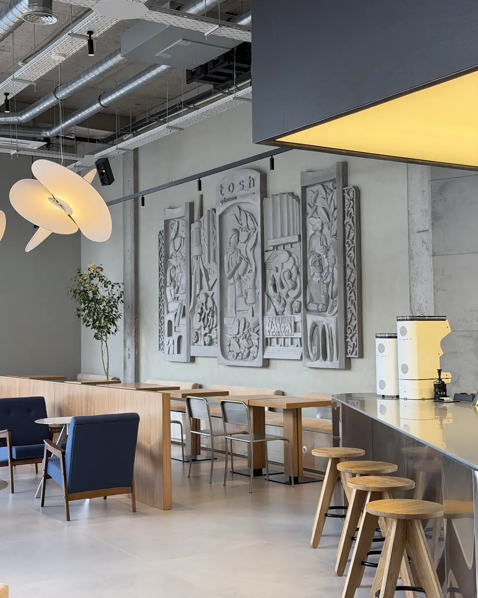
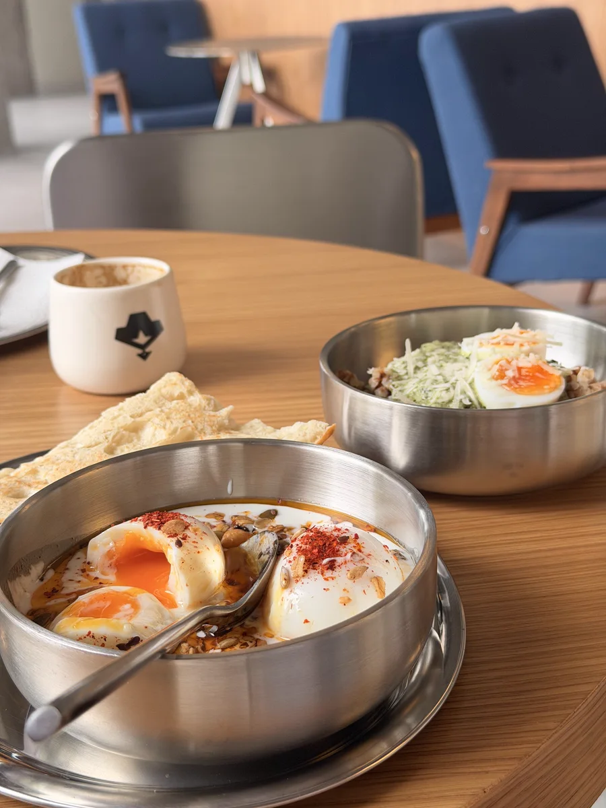
Ташкент, который мы любим
Tosh — кофейня про кофе, город и детали.
«Тош» по-узбекски — камень, а Тошкент — каменный город.
- Своя обжарка
- Завтраки весь день
- Авторские напитки
- Винил и зелень
Атмосфера
Дерево, металл, зелень и мебель в духе mid‑century.
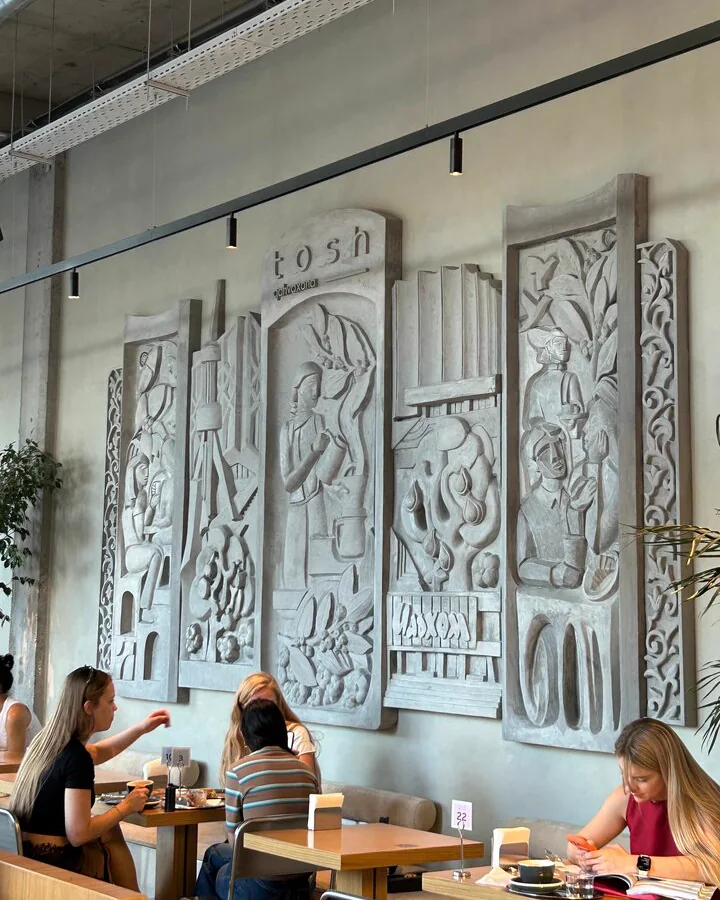
Барельефы в зале 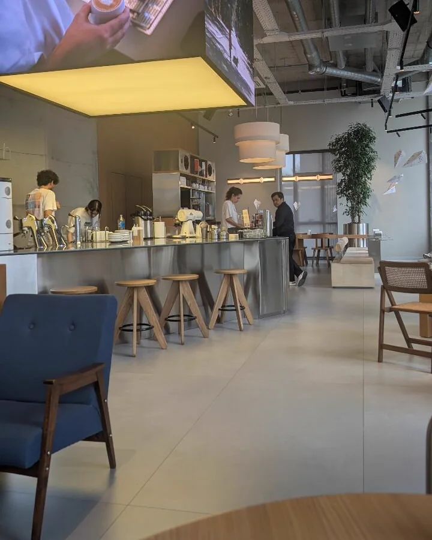
Световой куб над баром 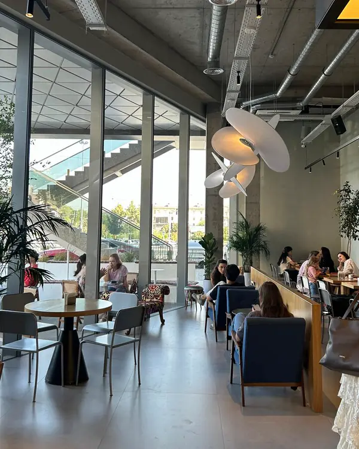
Светлый зал у окон 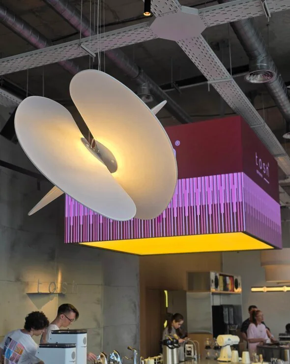
За длинным столом 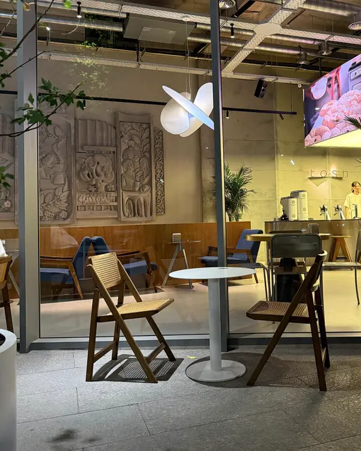
Вечером 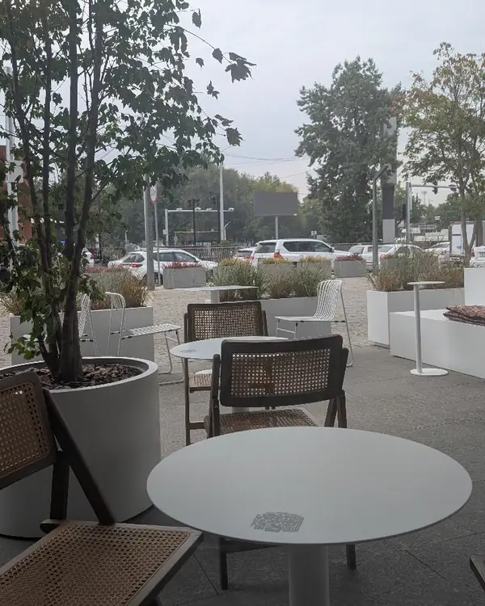
Летняя терраса
Кухня
Завтраки весь день, салаты и лёгкие блюда.
Всё меню кухни-
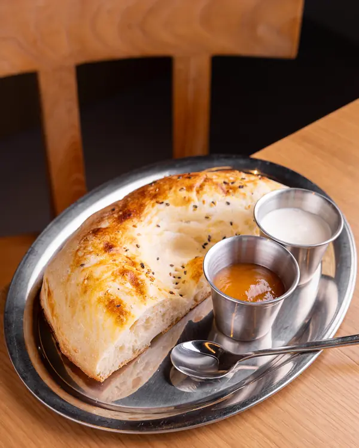
Завтрак TOSH
35 000Горячая лепёшка, каймак и джем. Фишка — в простоте
-
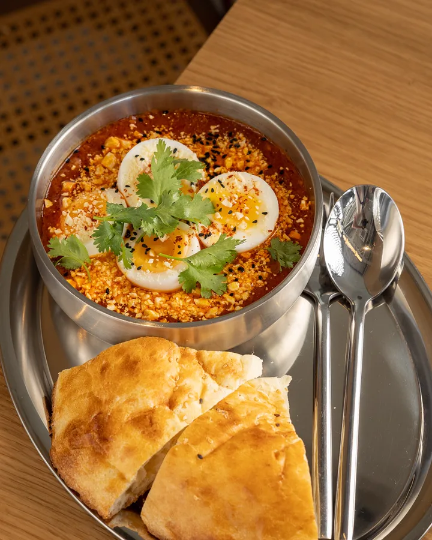
Шакшука TOSH
70 000Яйца в томатном соусе с куртом и чёрным тмином, к ней лепёшка
-
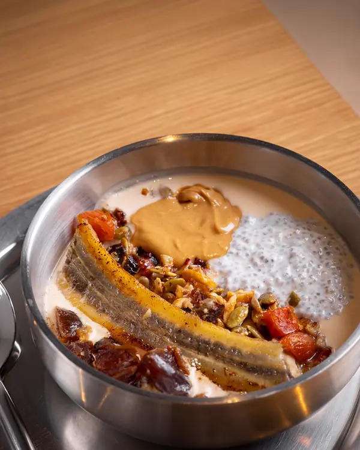
Кофейный йогурт с чиа
85 000Жареный банан, гранола, орехи, мёд и корица
-
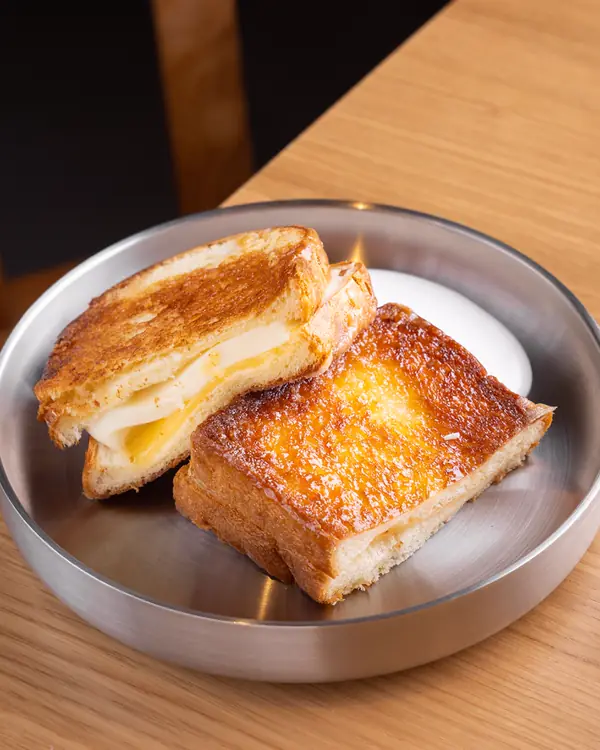
Карамельный тост с сыром
75 000Бриошь, моцарелла и гауда, карамель из мёда, сметана
Десерты
Печём к кофе: печенье, рулеты, брауни и торты.
-
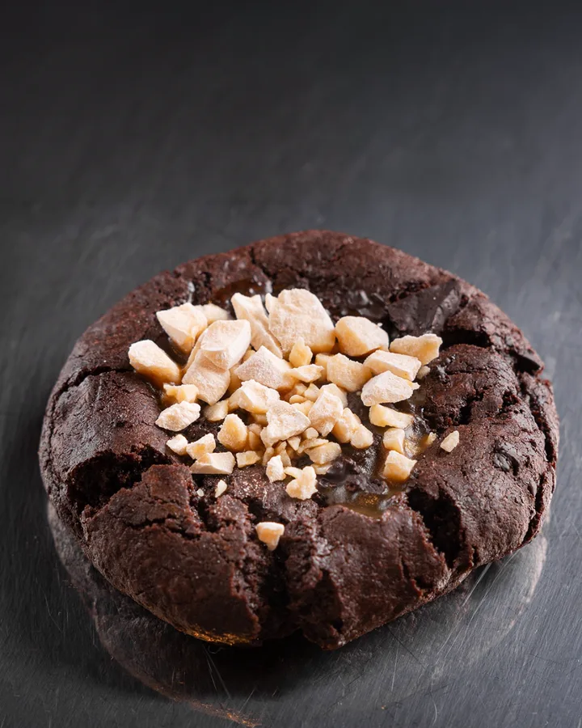
Шоколадное печенье с карамелью и куртом
40 000 -
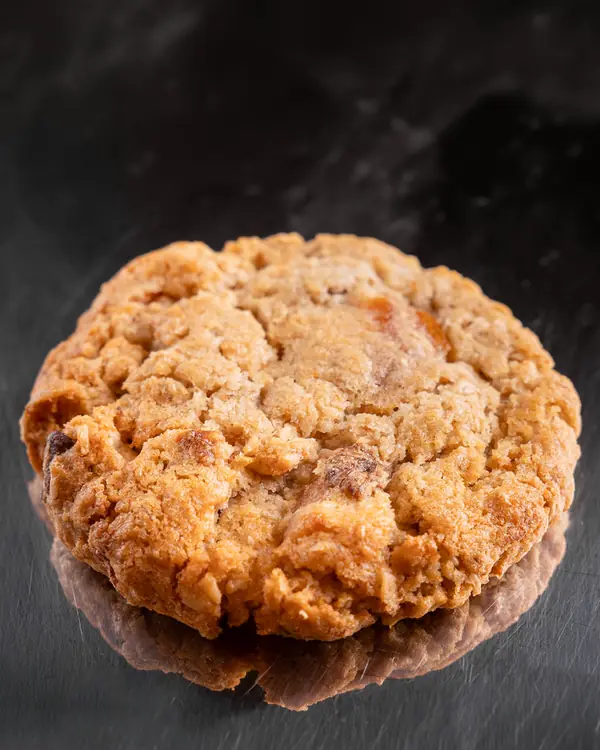
Овсяное печенье без пшеничной муки
25 000 -
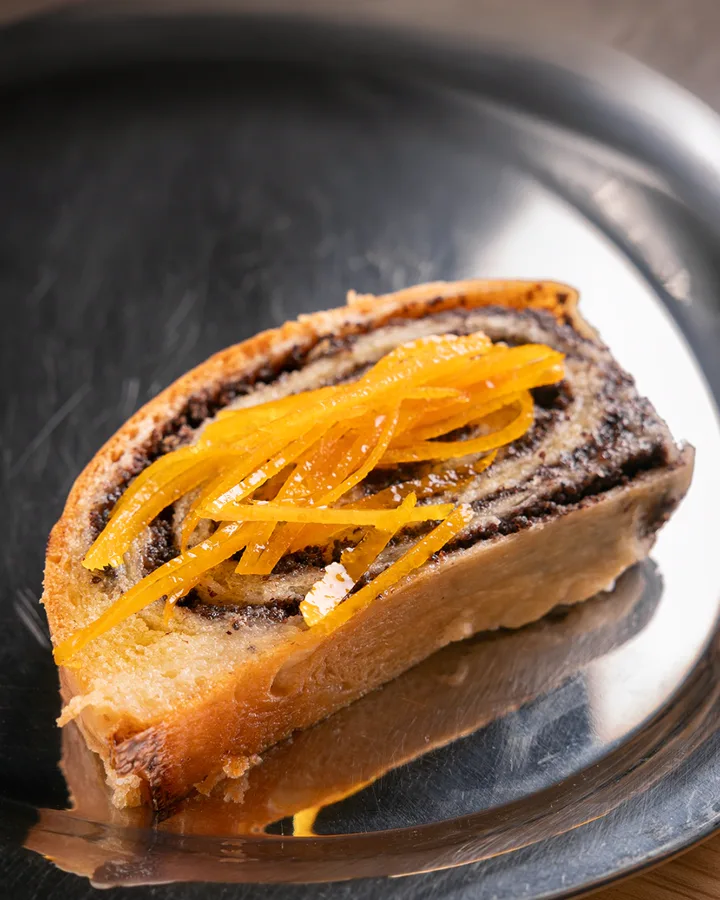
Маковый рулет с апельсином
30 000 -
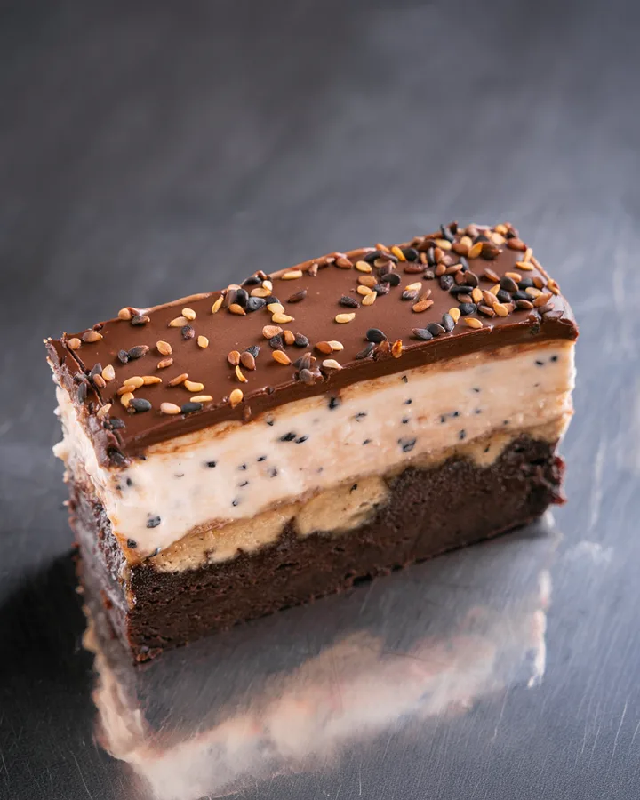
Чиз-брауни с халвой и чёрным тмином
55 000 -
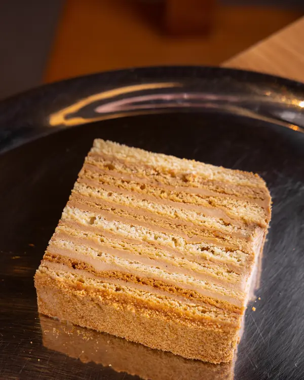
Медовый торт
45 000
Гости о нас
4,7 на Яндекс КартахКак нас найти
Ташкент, Мирабадский район, улица Авлиё‑Ата, 128
Часы работы
- Пн–Сб
- 8:00–21:00
- Вс
- 10:00–21:00
Кухня работает до 20:00.